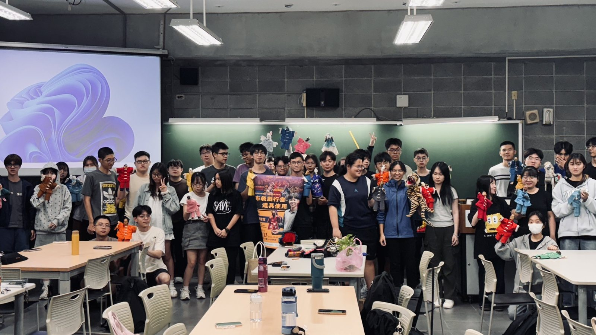
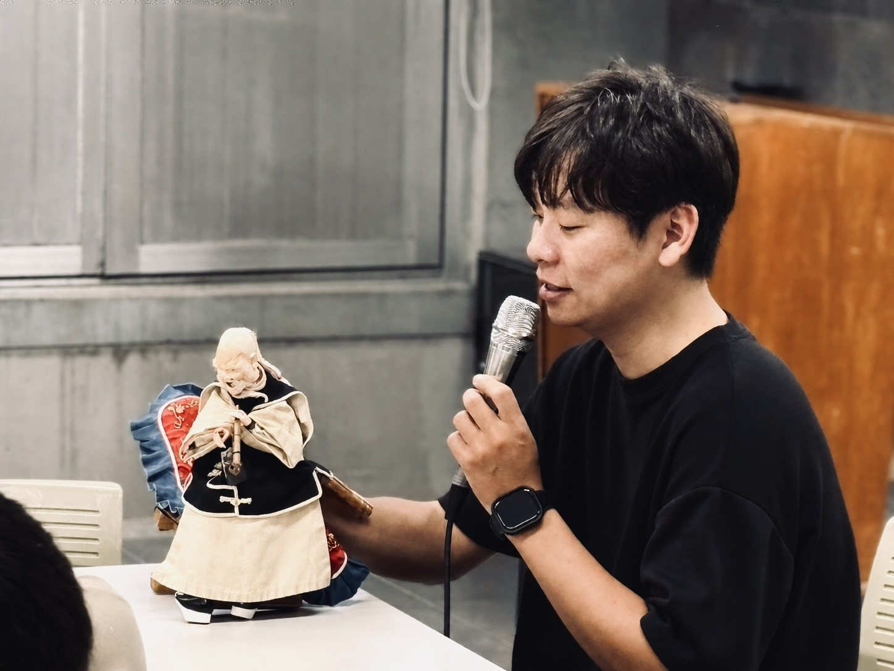
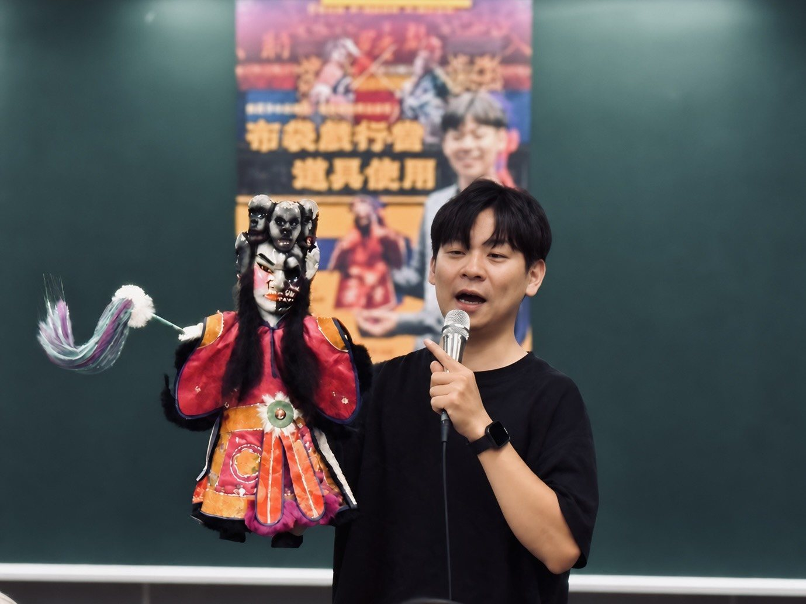
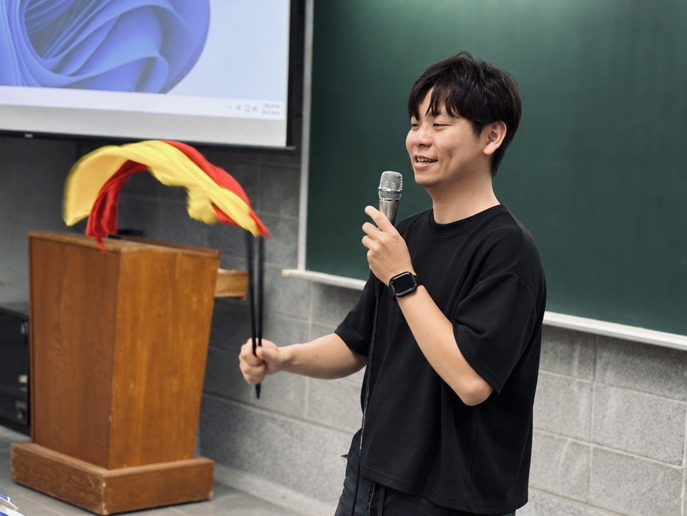

01
劇目演出
完整製作、藝術節、場館、廟埕與節慶演出；也可依活動流程安排節選版本。
查看劇目 →從完整劇目、校園講座到布袋戲示範與親子體驗，可依活動場地、觀眾年齡、流程與技術條件安排合適的合作內容。
完整製作、藝術節、場館、廟埕與節慶演出；也可依活動流程安排節選版本。
查看劇目 →從角色行當、操偶、臺語口白、後場音樂、戲偶與道具切入，可配合課程或社團需求調整。
查看宜蘭大學案例 ↓短段演出、戲偶／操偶示範、後場介紹、親子互動與手作，可組成完整體驗流程。
查看親子體驗案例 ↓歡迎提供活動日期、地點、時段、預計觀眾與場地條件，我們會依劇目與活動形式建議合適的內容與長度。
以布袋戲角色行當、戲偶道具（砌末）與操偶方式為主題，透過現場示範帶領學員認識不同角色如何運用身段、道具與聲線建立人物。
講座內容可依校園課程、社團、藝文教育或推廣活動需求調整，並搭配示範、互動與實際觀察。
「砌末」是傳統戲曲舞臺道具的統稱，例如扇子、刀槍、馬鞭、拂塵、桌椅與轎子；除了完成角色動作，也能表明身分、暗示場景與推進劇情。




從布袋戲演出延伸到近距離戲偶示範、導覽與手作體驗，讓觀眾不只看戲，也能靠近戲棚、認識戲偶並實際參與。
可依活動需求安排短段演出、操偶／戲偶示範與手作體驗，適合親子活動、校園推廣、藝文場館及節慶工作坊。


來信時可附上活動日期、地點、預計觀眾、場地條件與希望的合作形式，方便我們評估演出內容與技術需求。